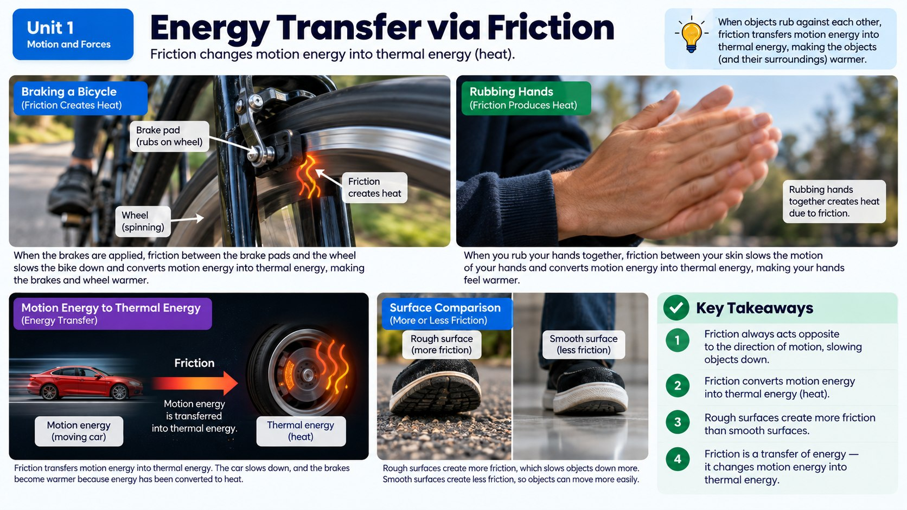

After the crash, the truck screeches to a stop instead of sliding forever. Where does all that motion energy actually go?

Energy Doesn't Just Disappear
Any moving object has kinetic energy, which is simply the energy an object has because it's moving. The faster something moves, or the more mass it has, the more kinetic energy it carries. Our speeding truck, right before the crash, has a lot of kinetic energy built up. One of the most important rules in all of science is that energy can't just vanish: it can only be transferred to something else or transformed into a different form.
So when the truck suddenly slams into the pole and stops, all that kinetic energy has to go somewhere. Some of it gets transferred into the pole and the truck's crumpling metal frame, some turns into sound energy (that loud crunching bang you'd hear), and some turns into heat. Nothing about the crash destroys energy: it just moves it around and changes its form.
It helps to clear up a common misconception here too: people often say energy gets "used up" during a crash, as if it simply vanishes once it's done its job. What actually happens is closer to a magic trick where nothing really disappears, it just changes costumes. Every joule of kinetic energy the truck had right before impact is still around somewhere afterward: some as heat warming the crumpled metal and the pavement, some as sound waves spreading outward and eventually fading into the air, and some as the energy stored in bent, deformed metal. Scientists call this idea the law of conservation of energy, and it's one of the most well-tested rules in all of science: in a closed system, the total amount of energy never increases or decreases, it only changes form or location.
Friction: A Sneaky Way Energy Escapes
Even before the crash, the truck was already losing some of its kinetic energy to friction, a force that resists motion whenever two surfaces rub or slide against each other. Every time the tires touch the pavement, or a sliding crash-test dummy scrapes against the truck bed, friction is at work, converting motion energy into heat energy. That's why a rolling ball eventually slows down and stops on a flat sidewalk even without anyone or anything obviously pushing on it: friction between the ball and the ground is constantly transferring its kinetic energy away as heat.
You can actually feel this transfer happen: rub your hands together quickly and you'll notice they warm up. That warmth is proof that the kinetic energy of your moving hands is being converted into thermal energy by friction.
How much energy friction converts to heat depends heavily on what two surfaces are involved. Rubber tires gripping dry pavement create a lot of friction, which is exactly why cars can accelerate and brake so effectively on a dry road. But that same rubber sliding across a sheet of ice creates far less friction, which is why cars skid, slide, and take much longer to stop in icy conditions: there's simply less friction available to convert that kinetic energy into heat quickly. This is also why professional drivers and driving instructors always warn people to leave extra following distance during winter weather: with less friction available, the same amount of kinetic energy takes a much longer distance to fully convert away, meaning a much longer stopping distance.
Spotting Evidence of Energy Transfer
Since you can't see energy directly, scientists look for clues (evidence) that energy has been transferred from one object to another. Three of the biggest clues are changes in motion, changes in temperature, and sound. In our crash, all three show up at once: the truck's motion suddenly changes (it stops), the crumpled metal and tires heat up slightly from the impact and friction, and a loud crash sound blasts outward, carrying away some of that energy as sound waves.
Understanding energy transfer through friction is exactly why cars are designed with crumple zones: sections built to bend and crush on purpose during a collision. By crumpling, the car's frame absorbs and spreads out the kinetic energy over a longer distance and time, transferring it into bent metal instead of directly into the passengers. It's a clever way of using energy transfer to protect people.
Not All Friction Is a Problem
It's tempting to think of friction as purely a nuisance since it's constantly draining kinetic energy away as heat, but plenty of everyday activities depend completely on friction to work at all. Walking is a perfect example: every step you take relies on friction between your shoe and the ground to keep your foot from sliding out from under you, which is exactly why walking on ice or a freshly mopped floor feels so wobbly and dangerous; there simply isn't enough friction to grip the surface. Climbing a rope, gripping a pencil, and even a car's tires gripping the road to turn a corner all depend on friction doing its job well.
Engineers don't try to eliminate friction everywhere; instead, they carefully decide where they want a lot of it (tire tread, shoe soles, bicycle brake pads) and where they'd rather minimize it (the inside of a car engine, where extra friction just wastes fuel as unwanted heat and wears parts out faster). Understanding energy transfer through friction isn't just about explaining crashes: it's about knowing when friction is your best friend and when it's just getting in the way.
Real-World Connections
Running Shoe Tread Patterns
Shoe companies design the bumpy tread on sneakers specifically to increase friction with the ground, so runners can push off harder without slipping.
Rubbing Cold Hands Together
Rubbing your palms together on a cold day converts the energy of motion into heat through friction, the same reason a bike's brake pads get hot after a long downhill ride.
Meet the Scientist
Tribologists (Friction & Wear Scientists)
Tribologists study exactly how much grip different materials create when they rub together. Shoe and tire companies hire tribologists to test hundreds of tread patterns and rubber recipes to find the grippiest combination for running shoes, hiking boots, or race car tires.
Key Vocabulary
Bold, underlined words in the reading above are clickable too. Tap one to see its definition pop out. Or click or tap a card below to reveal the definition.
Explore More
Chapter Review
1. What happens to the truck's kinetic energy when it crashes into the pole and stops?
2. What is friction?
3. Which of these is NOT typically evidence that energy has been transferred?
4. Why do cars have crumple zones?
5. Why do your hands feel warm after rubbing them together quickly?
California Science Test (CAST) Practice
After a collision, a truck's brakes lock and it slides to a stop. Investigators tested how far a truck sliding at the same starting speed travels before stopping on four different road surfaces, since each surface produces a different amount of friction to convert the truck's kinetic energy into heat.
| Road Surface | Sliding Distance to Stop (m) |
|---|---|
| Gravel | 15 |
| Dry Asphalt | 20 |
| Wet Asphalt | 35 |
| Ice | 90 |
Based on the data in the table, on which surface is the truck's kinetic energy converted to heat through friction most quickly?